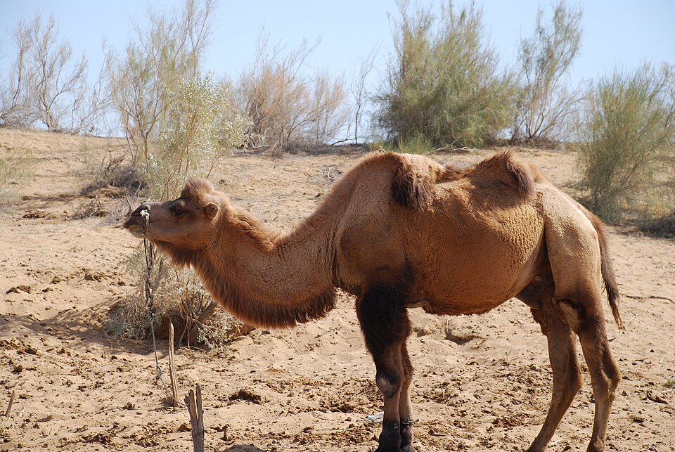

Overview
Two-humped camel of Central Asian deserts with a heavy coat shed seasonally. [1]
Native range
Central Asia (Gobi and steppe deserts); the wild Bactrian camel (C. ferus) is a separate, endangered species. [1][2]
Size
300–690 kg; calves ~37 kg and mobile within 24 hours. [1]
Lifespan
Average ~30 years wild (up to 50); ~35 years recorded in captivity. [1]
Breeding & gestation
360–440 days. [1]
Temperament & social structure
Not verified from a primary source for this page.
Habitat needs
Built for extreme seasonal desert temperatures: sheds its heavy coat with the seasons and tolerates a 6 °C rise in body temperature before sweating. [1]
Where they thrive (Texas / US)
Coat and climate adaptation suggest better cold tolerance than dromedaries; no verified US region guidance found. [1]
Space per animal
Scottish DWA guidance (minimum): one camel ≥5×10 m; one male + two females ≥10×20 m. [3]
Housing & shelter
Shelter for all animals sited against prevailing weather; lockable shelter recommended. [3]
Fencing
At least 1.9 m (6 ft) mesh, visible high-tensile or post-and-rail; no barbed wire. [3]
Natural diet
Not verified in detail for this page.
Feed & supplementation
No verified protein/mineral figures for this page.
Common health issues & parasites
No verified species-specific list for this page; work with a camelid vet.
Vet care & vaccination
No vaccines are labeled for this species in the US; any vaccination protocol is extra-label and should be set by a veterinarian experienced with exotic hoofstock. (No specific protocol was verified for this page.)
Handling & capture
Not verified for this page; use experienced handlers. [3]
Conservation status
IUCN Red List: EN (wild Bactrian camel, Camelus ferus); domestic Bactrian not separately assessed. [2]
Legal notes (general info, not legal advice)
General information, not legal advice. USDA APHIS licensing under the Animal Welfare Act applies to dealers and exhibitors; check USDA and your state wildlife and animal-health agencies before buying, moving or selling. [3][4]
Sources
- Animal Diversity Web (Univ. of Michigan) – Camelus bactrianus
- IUCN Red List – Camelus bactrianus (assessment page)
- Scottish Government – Dangerous Wild Animals species guidance: Camels (fence ≥1.9 m, no barbed wire, enclosure guide)
- USDA APHIS – Animal Welfare Act licensing & registration
Figures are taken from the numbered sources; items marked "not verified" could not be confirmed from a primary source and are intentionally left blank. Husbandry guidance is general—confirm with an exotic-animal veterinarian.